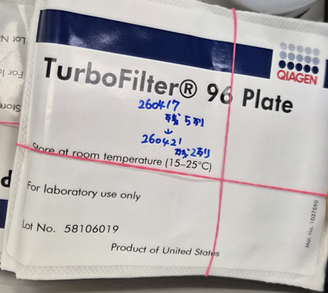
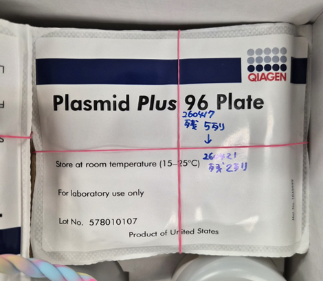
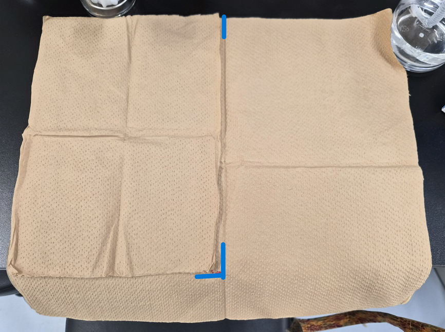
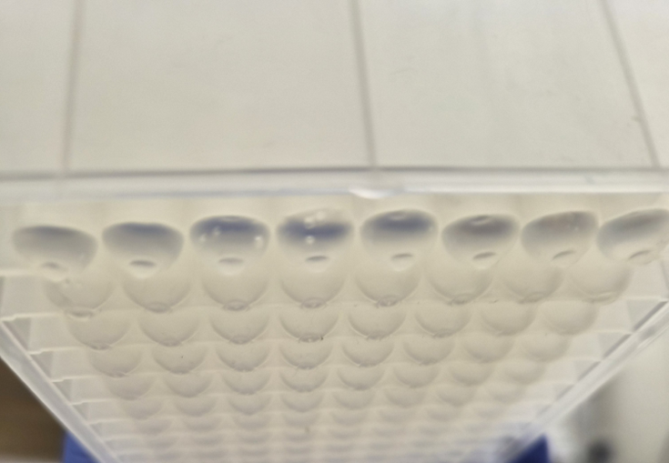
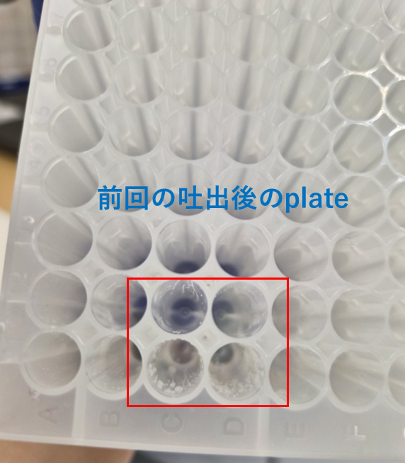
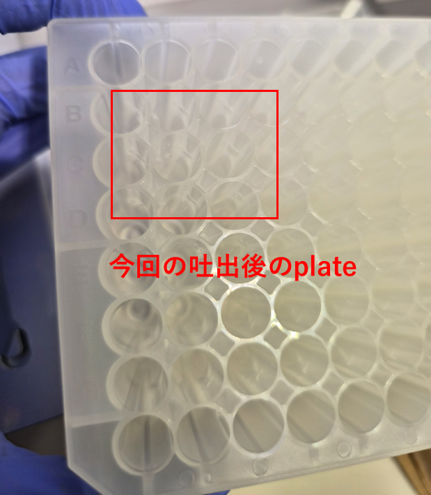

Logomix Bio
QIAvac エンドトキシンフリー プラスミド精製
QIAprep 96 Plus Kit / MINI 96 / 96-well 系
原理
QIAprep 96 Plus キットを用いた、Deep Well 培養菌体からの 96-well 並列プラスミド精製。アルカリ溶解（P1/P2/S3）→ TurboFilter 96 でクリアランス → BB 添加でシリカ膜（Plasmid Plus 96）に DNA 結合 → ETR 洗浄でエンドトキシン除去 → PE 洗浄 → 乾燥 → TE 溶出。
MINI 96 マルチチャンネルピペットによる全工程の同時処理と、QIAvac 真空マニフォールドによるバキューム駆動が特徴。
必要な材料
試薬
| 試薬・材料 | メーカー / Kit / 型番 | 備考 |
|---|---|---|
| Buffer P1（RNase 入り） | QIAprep 96 Plus Kit / Cat: 16181 | 4℃保存（203 室共通棚） |
| Buffer P2 | QIAprep 96 Plus Kit | 使用前に沈殿確認、あれば 37℃ 溶解 |
| Buffer S3 | QIAprep 96 Plus Kit | — |
| Buffer BB | QIAprep 96 Plus Kit | 使用前に沈殿確認、あれば 37℃ 溶解 |
| Buffer ETR | QIAprep 96 Plus Kit | エンドトキシン除去 |
| Buffer PE | QIAprep 96 Plus Kit | 洗浄バッファー（エタノール添加済を確認） |
| TE buffer (pH 8.0) | ナカライテスク / Cat: 06890-54 | 溶出用 |
| Plasmid Plus 96 plate | QIAprep 96 Plus Kit | シリカ膜カラム |
| TurboFilter 96 plate | QIAprep 96 Plus Kit | ライセートクリアランス |
器具・消耗品
| 器具 | メーカー / 型番 | 用途 |
|---|---|---|
| Deep Well plate（培養済み）× 2 | Ritter / Cat: 43001-0420 | 菌体培養（1 well あたり 培養液 1.5 mL → 2 枚で 1 サンプル） |
| 丸穴 96 Deep Well Plate（新品） | Thermo / Cat: 278743 | TurboFilter ろ過受け / 溶出受け（各 1 枚） |
| V 底 PCR チューブプレート | WATSON / Cat: 437-177C | プラスミド保存用 |
| 粘着テープ（QIAGEN Tape pads） | QIAGEN / Cat: 1018104 | シーリング用 |
| 布テープ（Aera Seal） | EXCEL SCIENTIFIC / Cat: 3-9125-02 | シーリング用 |
| アルミシール（SureSeal AL） | BMBio / Cat: BMF-F-96-100 | シーリング用 |
| QIAvac 真空マニフォールド + トッププレート | QIAvac 96 / Cat: 19504 | バキューム駆動 |
| 下駄プレート（自作 3D プリント） | — | マニフォールド内嵩上げ |
| 廃液トレイ | QIAvac 96 / Cat: 19504 | 洗浄廃液受け |
| MINI 96 マルチチャンネルピペット | INTEGRA | 全工程の同時分注 |
| 非滅菌チップ（200 µL） | INTEGRA / Cat: 6433 | 溶出以外 |
| 滅菌チップ（200 µL） | INTEGRA / Cat: 6434 | 溶出専用 |
| リザーバー 150 mL / 300 mL | INTEGRA / Cat: 6318 / 6328 | バッファー供給 |
| 遠心機（プレート対応） | — | 4,000 rpm（≒ 2,100 × g）対応 |
| NanoDrop 分光光度計 | Thermo | 濃度・純度測定 |
| ボルテックス・キムタオル・ラップ | — | 各種補助 |


1 準備 （約 15 分）
1
バッファー確認
Buffer P2 と Buffer BB に沈殿がないかを確認する。沈殿があれば 37℃ で溶解させてから使用する。
⚠️
注意
P2 / BB はSDS含有のため低温で結晶化する。沈殿が残ったまま添加すると溶解効率が低下する。
2
バッファー分注（リザーバー準備）
各バッファーを遠沈管に分注後、MINI 96 専用リザーバーへ移して使用する。
前提: 菌体は Deep Well plate × 2 枚で培養。P1 は 2 枚に添加後、1 枚に統合。P2 以降は統合後の 1 枚に添加。下表は 27 well 使用時の必要量目安。
| バッファー | 1 well (µL) | 使用回数 | 96 well 換算 (mL) | 27 well 必要量 (mL) | リザーバー |
|---|---|---|---|---|---|
| Buffer P1 | 150 | × 2（2 枚分） | 28.8 | 8.4（7 + 3 mL） | 150 mL |
| Buffer P2 | 300 | × 1 | 28.8 | 8.4（7 + 6 mL） | 150 mL |
| Buffer S3 | 300 | × 1 | 28.8 | 8.4（7 + 6 mL） | 150 mL |
| Buffer BB | 300 | × 1 | 28.8 | 8.4（7 + 13 mL） | 300 mL |
| Buffer ETR | 250 | × 3 | 72.0 | 21（18 mL） | 300 mL |
| Buffer PE | 250 | × 6（2 回 × 3 添加） | 144.0 | 42（24 mL × 2 回） | 300 mL |
| TE buffer | 80 | × 1 | 7.7 | 2.24（2 + 3 mL） | 150 mL |
💡
ヒント
3 列分など少数 well の場合、150 mL リザーバーを手で持ち斜めに傾けて溶液を端に寄せて吸引する。Buffer P2 は気泡が入りやすいので多めに入れる。
3
遠心機の周知
本プロトコルでは遠心機を頻繁にスピンダウン用に使用する。同室の他作業者に使用予定を周知し、バランサー（プレート対応）の所在を確認しておく。
2 ライセート調製 （約 30 分）
MINI 96 の吸引・吐出速度は基本 Speed 6。例外は本文中に記載。
1
菌体回収遠心
- Deep Well plate（2 枚）を遠心機にセット（バランサー準備）
- 4,000 rpm（≒ 2,100 × g）、5 分間、4〜10℃ で遠心
- 遠心終了後、ゴミ箱上でデカントにより上清を除去（MINI 96 で 2 回回収後にデカント）
- キムタオルでプレート上部の液を拭き取りながらプレートを起こす
⚠️
クロスコンタミ注意
プレートを起こす際にウェル間で液が混ざらないよう、丁寧に拭き取る。
2
Buffer P1 添加・懸濁
- Buffer P1 150 µL を 2 枚のプレートそれぞれに加える（チップをウェル内に挿入しないこと、チップは継続使用）
- 粘着テープでシール
- ボルテックスでペレットを完全に懸濁
- スピンダウン
- 同じチップで 1 枚のプレートから全量吸引し、もう 1 枚へ統合（以降は 1 枚で進める）
💡
ヒント
リザーバーを手で持ち斜めに傾けて溶液を端に寄せると吸引しやすい。
3
Buffer P2 添加・転倒混和
- Buffer P2 300 µL を加える（吐出速度を Speed 3 に下げる、チップはウェル外で吐出）
- 粘着テープでシール
- 6〜8 回転倒混和
- スピンダウン
⚠️
時間制限
Buffer P2 添加後 5 分を超過しないこと（ゲノム DNA の不可逆変性確保）。次ステップへ速やかに進む。
⚠️
注意
Deep Well 上部に溶液が付着した場合、拭き取ってからシールする。
4
Buffer S3 中和・遠心
- Buffer S3 300 µL を加える
- 粘着テープでシール
- 15 回転倒混和（プレートを縦向きに持ち、手前から奥への向きに変えると混和しやすい）
- 遠心: 4,000 rpm、5 分間、室温（25℃）。バランサー準備、チップは継続使用
5
TurboFilter ろ過（ライセートクリアランス）
- 丸穴 96 Deep Well Plate（新品）を開封し、TurboFilter 96 plate を重ねる
- 真空マニフォールドに下表のとおりセット
- 同じチップでライセート（900 µL）を 300 µL × 3 回に分けて全量アプライ（大きな沈殿物を吸わないこと）
- 吸引開始
- ウェル内の溶液がなくなったら速やかに、ゆっくり常圧へ戻す（ホースは外さずスイッチを切る）
- 使用後の TurboFilter 96 plate はキムタオルの上に置きラップを被せて保管
| セット順序（下から） | 部品 |
|---|---|
| 1 | 下駄プレート（自作 3D プリント） |
| 2 | キムタオル |
| 3 | 丸穴 96 Deep Well Plate |
| 4 | トッププレート |
| 5 | TurboFilter 96 plate |

3 DNA 結合 （約 15 分）
1
Buffer BB 添加・混合
- 回収したライセート（900 µL）に Buffer BB 300 µL を添加
- 5 回ピペット混合（300 µL、Speed 10、底部から吸い上げ、チップは継続使用）
2
Plasmid Plus 96 へのアプライ
- 廃液トレイに Plasmid Plus 96 plate を重ねる（吸引前から廃液が染み出すため、廃液トレイをセットしておく）
- 真空マニフォールドに下表のとおりセット
- 同じチップで、ライセート（1,200 µL）を 300 µL × 4 回に分けて全量アプライ
- 吸引前に 1〜2 分間静置（液が自然落下する）
- 素早く吸引開始
- ウェル内の液がなくなった瞬間に、レギュレーターを回してゆっくり常圧へ戻す（発泡注意）
- 廃液トレイの廃液を捨てる
| セット順序（下から） | 部品 |
|---|---|
| 1 | 下駄プレート（自作 3D プリント） |
| 2 | キムタオル |
| 3 | 廃液トレイ |
| 4 | トッププレート |
| 5 | Plasmid Plus 96 plate |
⚠️
コンタミ防止
壁面上部に付着した飛沫はスピンダウンしない（クロスコンタミの原因）。
⚠️
重要
各吸引ステップ後、廃液トレイの廃液は必ず破棄する（次ステップで溢れる）。
4 洗浄・乾燥 （約 25 分）
マニフォールドのセット順は Part 3 ステップ 2 と同じ（廃液トレイ → トッププレート → Plasmid Plus 96）。
1
ETR 洗浄（× 3 添加）
- Plasmid Plus 96 plate と廃液トレイを重ねてマニフォールドにセット
- Buffer ETR 250 µL × 3 回添加
- 素早く吸引（発泡注意、ゆっくり常圧へ戻す）
- 廃液トレイの廃液を捨てる
2
PE 洗浄 1 回目（× 3 添加）
- Plasmid Plus 96 plate と廃液トレイを重ねてマニフォールドにセット
- Buffer PE 250 µL × 3 回添加（チップは次ステップで継続使用）
- 吸引開始
- 廃液トレイの廃液を捨てる
3
PE 洗浄 2 回目（× 3 添加）
- Plasmid Plus 96 plate と廃液トレイを重ねてマニフォールドにセット
- Buffer PE 250 µL × 3 回添加
- 吸引開始（未使用ウェルは粘着シールで封止し、手でプレートを押し込む）
4
残液除去・乾燥
- Plasmid Plus 96 plate をキムタオルにタップして残液を除去（持ち替えて複数回タップ）
- 廃液トレイの廃液を捨てる
- マニフォールドにセットし直し、10 分間吸引して乾燥（未使用ウェルは粘着シール、手でプレートを押し込む）
- 【最終タップ】Plasmid Plus 96 plate をキムタオルに再度タップし残液を完全除去
⚠️
超重要
最終タップでの残液完全除去はエタノール持ち越し防止のため必須。下流アプリケーション（電気穿孔、トランスフェクション等）の阻害要因となる。

5 溶出・測定 （約 15 分）
1
TE 添加・静置
- 滅菌チップに交換(プラスミド溶出には滅菌チップを使用)
- Plasmid Plus 96 plate に TE buffer 80 µL をカラム中央に滴下
- 粘着シールで封止
- 2 分間静置
2
溶出吸引
マニフォールドに下表のとおりセット(受けは新品の丸穴 96 Deep Well Plate)し、吸引開始。
| セット順序(下から) | 部品 |
|---|---|
| 1 | キムタオル(下駄代わり + コンタミ防止) |
| 2 | 丸穴 96 Deep Well Plate(新品) |
| 3 | トッププレート |
| 4 | Plasmid Plus 96 plate |
⚠️
重要
手でプレートを押し込まないと TE は落ちない。ポンプ調節とプレート押さえを 2 人で分担するとコンタミリスクを下げられる。
⚠️
注意
壁面上部に付着した飛沫液はスピンダウンしない(クロスコンタミ防止)。
3
溶出液の移し替え・ラベリング
- 溶出液を 1.5 mL チューブ + V 底プレートに分注: V 底プレートに 5 µL(MINI 96 で分注)、残りを 1.5 mL チューブへ Integra Voyager で移す
- キャップにラベル:
26.4.NN(日付) /HTNNN-N(プラスミド ID) / 余白(後で濃度を記入) - 4℃ 保存
💡
運用
溶出量目安は 50 µL(80 µL 添加に対する回収量)。V 底プレートは下流の DAPI 蛍光定量に直接使用可能。
4
NanoDrop 濃度測定
1.5 mL チューブから滅菌チップで 1〜2 µL を NanoDrop に滴下し、濃度・A260/A280・A260/A230 を記録する。
⚠️
注意
溶出後の最終測定では滅菌チップを使用する(フィルターチップ取り違え注意)。
5
片付け
- 使用済み Plasmid Plus 96 plate を保管(Lot 記録)
- 使用済み TurboFilter 96 plate を保管(Lot 記録)
- 真空マニフォールド・トッププレート・ホースを洗浄
- 廃液トレイの廃液を適切に処理
- 作業台を清掃
品質管理基準
| 項目 | 基準 | 備考 |
|---|---|---|
| 収量(NanoDrop) | 典型 50〜200 ng/µL × 50 µL | 培養量・株により変動 |
| A260/A280 | 1.85〜1.95 | 1.80 未満はタンパク混入の可能性 |
| A260/A230 | > 2.0 | 低値はエタノール / 塩持ち越しの可能性 |
| 収量ばらつき | 同条件サンプル間で CV < 30% | 大きな乖離は培養 / 操作起因 |
⚠️
クロスコンタミ警戒
溶出量が他より明らかに多い / 少ないウェルは前後の番号とクロスコンタミの可能性を疑う。隣接ウェル間での分注、デカント、タップ操作で液が飛散しやすい。


💡
コンタミ抑制の運用ポイント（過去試験のフィードバック反映）
- マニフォールド底のキムタオルは 4 枚重ねから 2 枚に減らす（吸引圧の安定化）
- 未使用ウェルは 粘着シールを well 前面に貼る（手で押し込んで密着）
- レギュレーターはゆっくり常圧へ戻す（急激な圧力変動が飛沫の原因）
- 2 人作業を推奨: 1 人がポンプ調節、1 人がプレート押さえ
💡
下流アプリケーション
DAPI 蛍光法による濃度再測定(V 底プレート 5 µL 利用)でクロスバリデーション推奨。NanoDrop 値と DAPI 値の乖離が大きい場合は、エンドトキシン残存や ssDNA 混入を疑う。